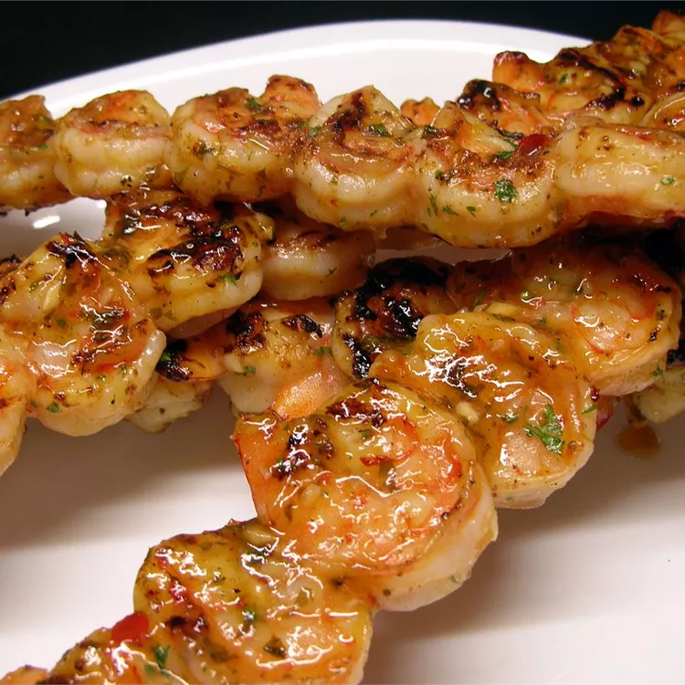

Shrimp

Description
This is an amazing spicy grilled shrimp recipe. It has become my family's new favorite.
- olive oil
- sesame oil
- chopped fresh parsely
- hot sauce
- minced garlic
- ketchup
- Asian chile paste
- salt
- black pepper
- lemon juice
- large shrimp, peeled and deveined
- wooden skewers, soaked in water
- Whisk together the olive oil, sesame oil, parsley, hot sauce, minced garlic, ketchup, chile sauce, salt, pepper, and lemon juice in a mixing bowl. Set aside about 1/3 of this marinade to use while grilling.
- Place the shrimp in a large, resealable plastic bag. Pour in the remaining marinade and seal the bag. Refrigerate for 2 hours.
- Preheat an outdoor grill for high heat. Thread shrimp onto skewers, piercing once near the tail and once near the head. Discard marinade.
- Lightly oil grill grate. Cook shrimp for 2 minutes per side until opaque, basting frequently with reserved marinade.
Home